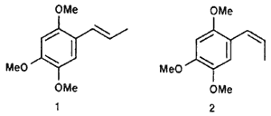

Translation by GC_MS, HTML by Rhodium
There slowly and simultaneously was added 7.7 g dimethyl sulfate (0.061 mol) and aqueous NaOH (2.44 g NaOH in 10 mL water) to 10 g eugenol (10) (0.061 mol), which was warmed up to 60°C. Care should be taken that the reaction mixture does not exceed 60°C. The mixture is stirred for another hour, after which the oleaginous phase separated. It yielded, after distillation, 9.55 g (88%) 11; bp 151-153°C/37 mmHg (lit22 bp 125°C/14 mmHg).
A mixture of 6.05 g (0.034 mol) of 11 and 25.4 g (0.423 mol) of GAA was cooled down to 5°C, after which there was added 4 mL (0.1 mol) concentrated nitric acid drop by drop. The mixture was stirred at the same temperature for another 20 min. It was subsequently poured on ice, which resulted in the precipitation of a yellow substance. It was filtered and washed with water (3 x 5 mL), dried in vacuo and recrystallized from hexane, yielding 5.46 g (72%) of 12 as yellow needle-shaped crystals; mp 41-42°C (lit23 mp 44°C).
Metallic sodium (1.5 g, 0.065 mol) was dissolved in 100 mL anhydrous MeOH. Subsequently, 10 g (0.045 mol) of 12 was added, after which the reaction mixture was stirred for another 8 h at 25°C. The precipitated product was removed via vacuum filtration and recrystallized from hexane, yielding 9.2 g (92%) of 3a as yellow crystals.
3.0 g (13.4 mmol) of 3a was dissolved in boiling MeOH, after which a solution of 10 g (0.057 mol) NaHSO3 in 50 mL was added. This mixture was refluxed for 4 h. The solvent was evaporated and the residue taken up into 100 mL MeOH and boiled for 5 mins. Insoluble salts were removed by filtration, while the filtrate was concentrated in vacuo and recrystallized from ethyl acetate, yielding 2.15 g (83%) of 3b as orange crystals that darken under the influence of light; mp 93-94°C (lit12 mp 94-96°C).
To a solution of 1.0 g (4.48 mmol) of 12 in 13 mL MeOH (at room temperature), there was slowly added a solution of 14.0 g NaHSO3 in 50 mL of water. The mixture was stirred at 25°C for another 8 hr. The suspension was filtered and the solids washed with 150 mL MeOH. The filtrates were combined and the solvent evaporated under reduced pressure. The residue was purified via column chromatography (20 g silica gel, hexane/ethyl acetate 9:1), yielding 0.57 g (66%) of 13 as a coffee-coloured viscous liquid.
A mixture of 0.1 g (0.52 mmol) of 13 and 0.5 mL (5.3 mmol) acetic anhydride was stirred at ambient temperature for 5 h. There subsequently was added 10 mL of water, after which the mixture was extracted with DCM (3 x 20 mL). The organic phase was dried over anhydrous sodium sulfate and the solvent stripped off under reduced pressure. The residue was dissolved in a mixture of water/MeOH (3:2, 25 mL), decolourized with charcoal and filtered. The filtrate was extracted with DCM (3 x 30 mL) and the organic phase dried over anhydrous sodium sulfate. This yielded 0.109 g (90%) of 14 as clear coffee-coloured crystals after evaporation of the solvent; mp 122-123°C (lit23 126-127°C).
A suspension of 0.26 g PdCl2(CH3CN)2 (0.1 mmol) in dry THF (3.5 mL) was prepared under a nitrogen atmosphere. The mixture was stirred at room temperature for 2 h, after which 0.1 g dry triethylamine (0.99 mmol) was added and the resulting mixture stirred for a further 1.5 h. There were two more additions of triethylamine (0.1 g, 0.99 mmol) followed by stirring at 25°C for 1.5 h. Subsequently, the mixture was filtered and the filtrate reduced in volume under reduced pressure. The residue was purified via column chromatography (30 g silica gel, hexane/ethyl acetate 9:1), yielding 0.067 g (35%) of 15 as yellow crystals; mp 86-87°C (lit14 88-89°C).
To a mixture of 12 g (0.12 mol) concentrated sulfuric acid and 180 g (1.76 mol) acetic anhydride, there was added 19 (60 g, 0.55 mol) in small portions and with vigorous stirring. The temperature is increased and should be maintained between 40-50°C till the end of the reaction. The reaction mixture is allowed to cool down to room temperature, after which it is poured in 750 mL cold water. The mixture is cooled down to 10°C and the white precipitate is filtered off. This yields 117.6 g (84%) of 20 as white crystals after recrystallization from EtOH and drying in vacuo; mp 96-97°C (lit24 96-97°C).
To a mixture of 28.5 mL (38 g, 0.3 mol) dimethyl sulfate and 40 mL MeOH, there was added 25.2 g (0.1 mol) of 20. Vacuum was applied (30 mmHg) and the reaction mixture temperature cooled down to 5°C. Aqueous NaOH (24 g NaOH in 50 mL water) was added to the mixture while the reaction mixture temperature did not exceed 20°C. When all solution was added, the vacuum was relieved and the mixture warmed to 60°C for 1h after which the reaction was allowed to rest for another 12 h. Two phases were formed upon the addition of 50 mL water. The mixture was extracted with ether (3 x 50 mL) and the organic phase dried over anhydrour sodium sulfate. Evaporation of the solvent yielded a residue, which on distillation under reduced pressure gave 10.51 g (62%) of 21; bp 115-120°C/5 mmHg.
To a precooled mixture of POCl3 (12 mL, 18.39 g, 0.12 mol) and dry DMF (11 mL), there was slowly added a solution of 20 g 21 (0.12 mol) in 4 mL DMF. The mixture was stirred and cooled on an ice bath during the addiction. Subsequently, the mixture was warmed to 95°C during 4.5 h. It was then cooled down to 25°C and added to 100 mL of an ethyl acetate/water mixture. This caused a creamy coloured precipitate to fall out, which was filtered and recrystallized from EtOH to yield 11.9 g (51%) of 16a as white crystals; mp 112-113°C (lit25 114°C).
cis-Asarone (1) and trans-Asarone (2)
A 25 mL glass recipient sealed with a septum was charged with 0.177 g (5.5 mmol) NaH (75% solution), which was washed with 2 x 2 mL hexane. Under a nitrogen atmosphere, 2.7 mL DMSO was introduced and the suspension warmed up to 80°C for 45 min with vigorous stirring. At 0°C, there was added 1.52 g (4.15 mmol) of ethyltriphenylphosphonium bromide in 4.2 mL DMSO and the mixture stirred at room temperature for 40 min. There subsequently was added at 25°C 0.12 g (0.61 mmol) of 16a and the mixture stirred for 2 days. The solution was whased with brine (25 mL) and extracted with ethyl acetate (3 x 15 mL). the organic phase was dried over anhydrous sodium sulfate and the solvent evaporated in vacuo. The residue was purified by column chromatography (30 g Florisil, hexane/ethyl acetate 8:2), yielding 0.018 g (14%) of a mixture of 1/2 (52:48) as a coffee-coloured oil.
To a boiling solution of 182 g (1.2 mol) of 22 in 450 mL water, there was added preheated aqueous NaOH (72 g NaOH in 360 mL water). The mixture was heated and 189 g (1.5 mol) dimethyl sulfate was drop-wise added. The mixture was further warmed for 45 min and another 39 g (30 mL, 0.31 mol) dimethyl sulfate was added. After 10 min, there was successively added aqueous NaOH (12 g NaOH in 60 mL water) and 30 mL dimethyl sulfate. This was repeated twice, finally followed by the addition of 75 g NaOH in 150 mL water. The reaction mixture is warmed for an additional 20 min and allowed to cool down to 25°C, after which is extracted with ether (3 x 50 mL). The combined ether extracts were dried over anhydrous sodium sulfate and the solvent removed in vacuo, yielding a dense oil that is further purified by distillation. This gave 181.49 g (91%, lit 19 82-87%) of 23 (bp 153°C/8 mmHg) as a white solid; mp 45-46°C (lit19 45-46°C).
A 1 L glass recipient covered with aluminium foil was charged with 350 mL (7.77 mol) HNO3 and brought to a temperature of 15°C (water bath) (careful! 16b is photosensitive). Subsequently, there slowly was added 70 g (0.42 mol) of finely crushed 23, care being taken that the temperature remained 18-22°C. The mixture was stirred for 10 min and poured in a glass recipient containing 4 L of water under vigorous stirring. After 15 min, a precipitate started to fall out which was filtered in the absence of light, and washed with cold water (2 L). It was dried at ambient temperature and protected from light for 15 days. The solid substance is recrystallized twice from EtOH, yielding 56.94 g (64%) of 16b; mp 129-131°C (lit26 129-131°C).